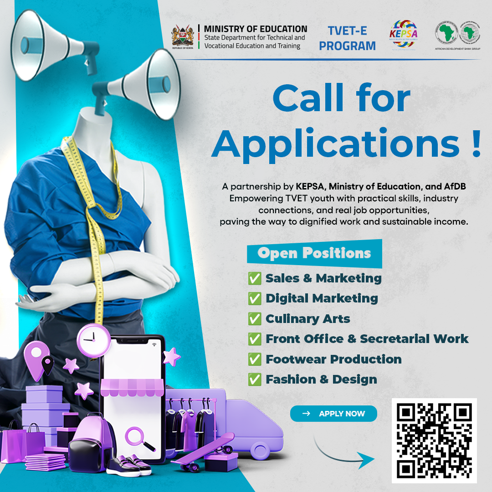
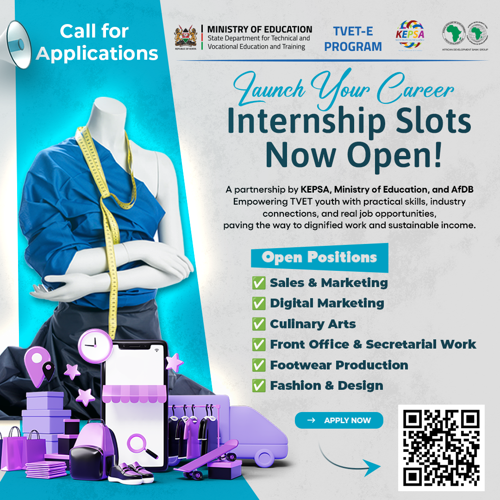

06 / Youth employment · Skills · Storytelling
Future of Work
Programme communications exploring youth employment, digital skills and a changing world of work.
- Featured work
- Future of Work Summit visuals and programme storytelling
- Focus
- Youth employment, skills development and opportunity

Make the changing world of work tangible.
The summit visual centres the theme “Re-imagining jobs for Africa in a disrupted labour market for global competitiveness.” Supporting programme materials connect that conversation to youth employment, entrepreneurship and skills development.
Selected campaign artwork and presentation moments are shown here as a concise visual showcase.
